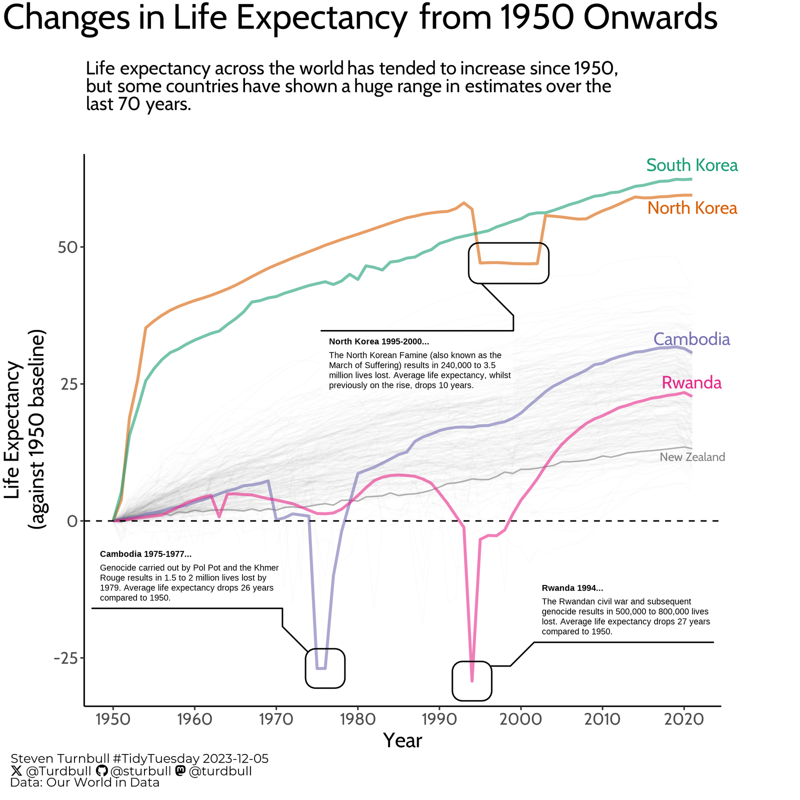
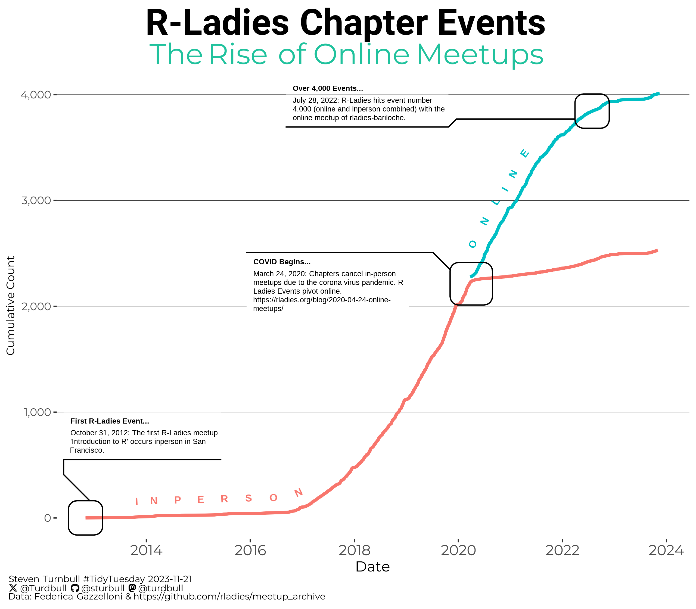
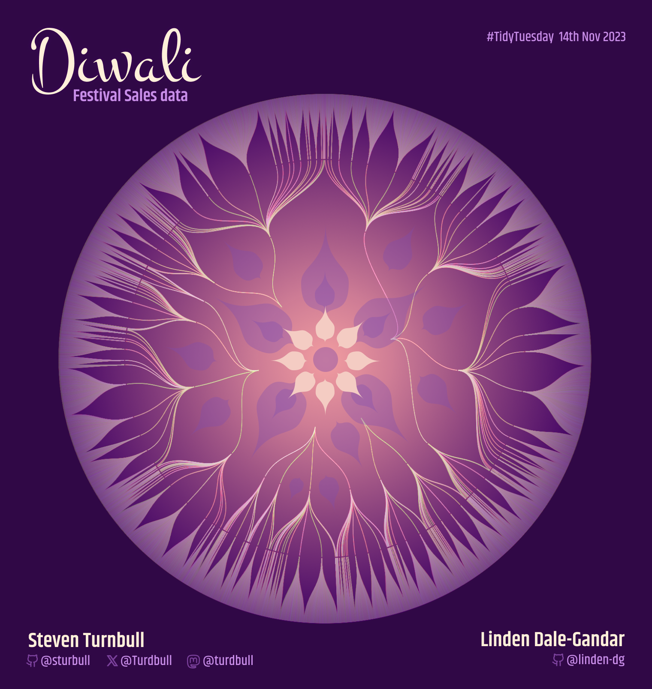
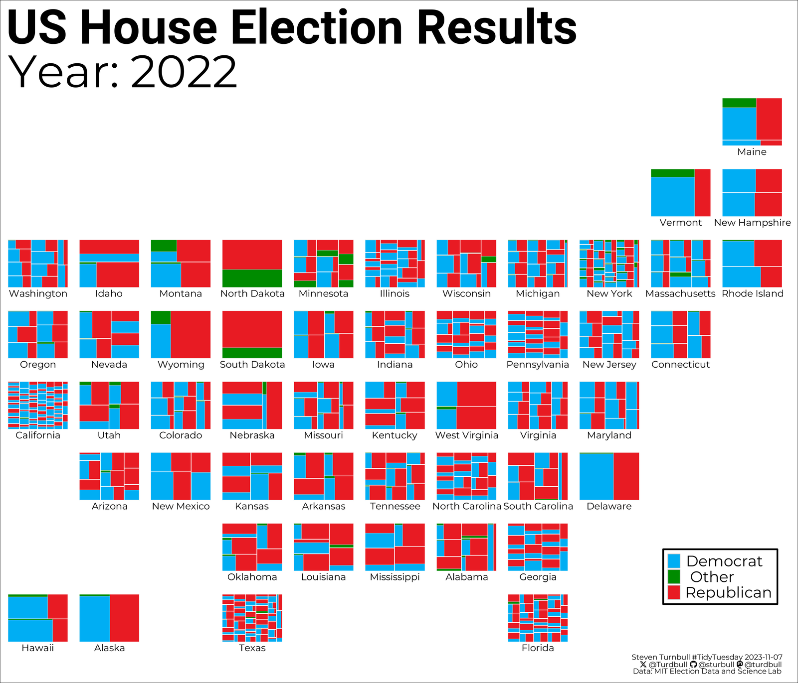
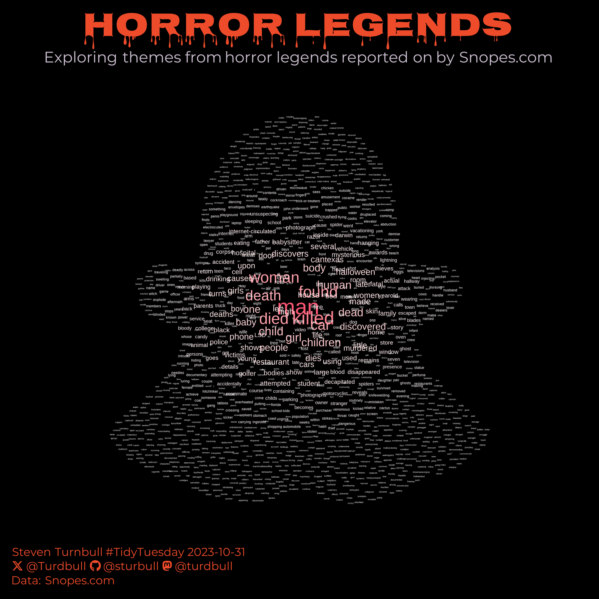
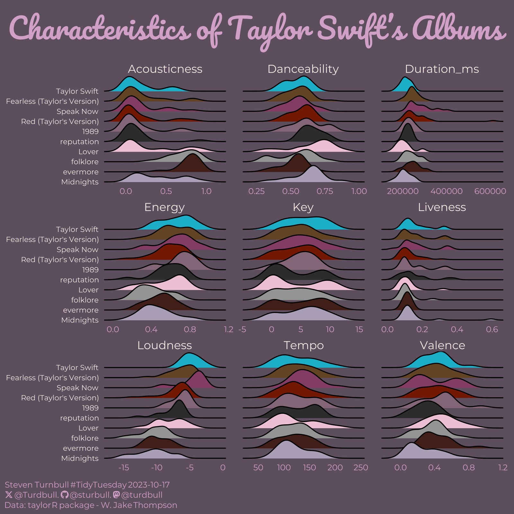
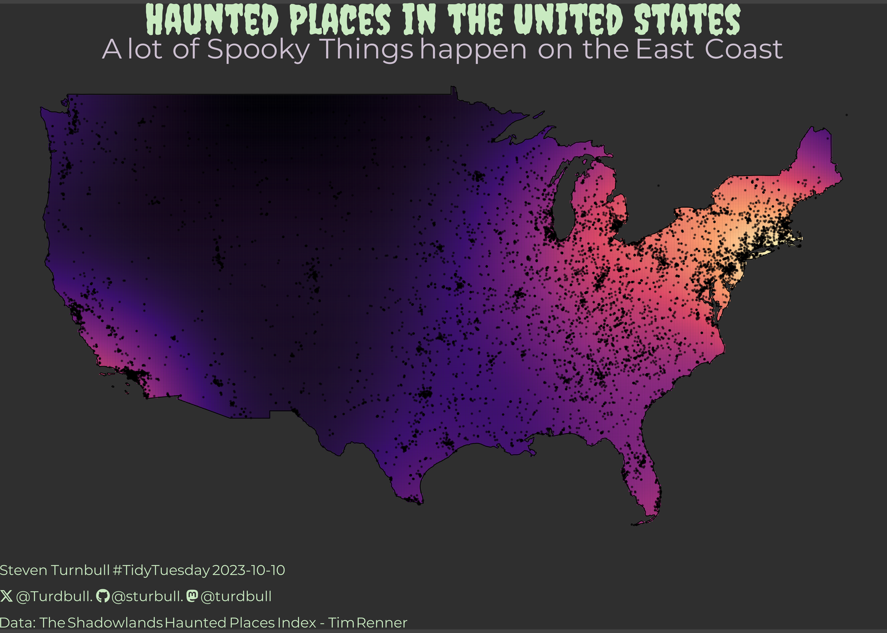
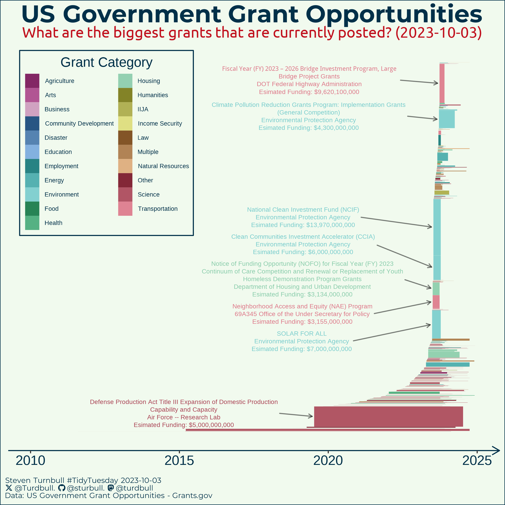

Charts I’ve made for TidyTuesday, the R community’s weekly data project. The code for each is in my TidyTuesday repo.

5 December 2023Changes in life expectancy from 1950Life expectancy change against a 1950 baseline, with the drops in Cambodia, Rwanda and North Korea annotated.View code

21 November 2023R-Ladies chapter eventsCumulative in-person and online R-Ladies events, showing the shift online from 2020.View code

14 November 2023Diwali festival salesFestival sales data drawn as a radial, flower-shaped tree. A collaboration with Linden Dale-Gandar.View code

7 November 2023US House election results, 2022A treemap per state, laid out as a map, showing Democrat, Republican and other vote shares.View code

31 October 2023Horror legendsA word cloud of themes from horror legends reported on by Snopes, shaped like a ghost.View code

17 October 2023Characteristics of Taylor Swift's albumsRidgeline plots comparing nine audio features across ten albums.View code

10 October 2023Haunted places in the United StatesA density map of reported haunted places, brightest along the East Coast.View code

3 October 2023US government grant opportunitiesOpen grants on Grants.gov by posting date and size, with the largest annotated.View code